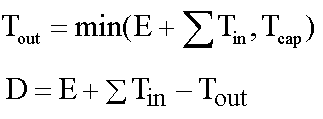
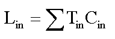
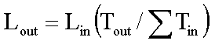
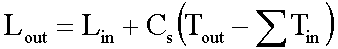
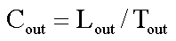

D-Infinity Transport Limited Accumulation
(c) 2010 by David G. Tarboton
This function is designed to calculate the transport
and deposition of a substance (e.g. sediment) that may be limited by both
supply and the capacity of the flow field to transport it. This function
accumulates substance flux (e.g. sediment transport) subject to the rule
that transport out of any grid cell is the minimum between supply and transport
capacity, Tcap. The total supply at a grid cell is
calculated as the sum of the transport in from upslope grid cells, Tin,
plus the local supply contribution, E (e.g. erosion). This function
also outputs deposition, D, calculated as total supply minus actual
transport.

Here E is the supply. Tout
at each grid cell becomes Tin for downslope grid cells
and is reported as Transport limited accumulation (tla). D
is deposition (tdep). The function provides the option to evaluate
concentration of a compound (contaminant) adhered to the transported
substance. This is evaluated as follows:

Where Lin is the total incoming
compound loading and Cin and Tin
refer to the Concentration and Transport entering from each upslope grid
cell.

If

else

where Cs is the concentration
supplied locally and the difference in the second term on the right represents
the additional supply from the local grid cell. Then,

Cout at each grid cell comprises
is the concentration grid output from this function.
If the outlets shapefile is used the tool only
evaluates that part of the domain that contributes flow to the locations
given by the shapefile.
Transport limited accumulation is useful for
modeling erosion and sediment delivery, including the spatial dependence
of sediment delivery ratio and contaminant that adheres to sediment.
Parameters
- Number of Processes
Integer
- The number of stripes that the domain will be divided into and the
number of MPI parallel processes that will be spawned to evaluate each
of the stripes.
- D-Infinity Flow Direction Grid
Raster Grid
- A grid giving flow direction by the D-infinity method. Flow direction
is measured in radians, counter clockwise from east. This can be created
by the tool "D-Infinity Flow Directions".
- Supply Grid
Raster Grid
- A grid giving the supply (loading) of material to a transport limited
accumulation function. In the application to erosion, this grid would give
the erosion detachment, or sediment supplied at each grid cell.
- Transport Capacity Grid
Raster Grid
- A grid giving the transport capacity at each grid cell for the
transport limited accumulation function. In the application to erosion
this grid would give the transport capacity of the carrying flow.
- Input Concentration Grid
Raster Grid (optional)
- A grid giving the concentration of a compound of interest in the
supply to the transport limited accumulation function. In the application
to erosion, this grid would give the concentration of say phosphorous
adhered to the eroded sediment. NOTE: if you need
this optional parameter please use "D-Infinity Transport Limited
Accumulation - 2" tool.
- Outlets Shapefile
Point Shapefile (optional)
- This optional input is a point shapefile defining outlets of interest.
If this file is used, the tool will only evaluate the area upslope of
these outlets.
- Check for Edge Contamination
Boolean
- This option determines whether the tool should check for edge
contamination. Edge contamination is defined as the possibility that
a value may be underestimated due to grid cells outside of the domain
not being considered when determining the result. Default True.
Outputs
- Transport Limited Accumulation Grid
Raster Grid
- This grid is the weighted accumulation of supply accumulated respecting
the limitations in transport capacity and reports the transport rate
calculated by accumulating the substance flux subject to the rule that
the transport out of any grid cell is the minimum of the total supply
(local supply plus transport in) to that grid cell and the transport
capacity.
- Deposition Grid
Raster Grid
- A grid giving the deposition resulting from the transport limited
accumulation. This is the residual from the transport in to each grid
cell minus the transport capacity out of the grid cell. The deposition
grid is calculated as the transport in + the local supply - the tranport
out.
- Output Concentration Grid
Raster Grid (optional)
- If an input concentation in supply grid is given, then this grid
is also output and gives the concentration of a compound (contaminant)
adhered or bound to the transported substance (e.g. sediment) is calculated.
NOTE: to produce this output please use "D-Infinity
Transport Limited Accumulation - 2" tool.